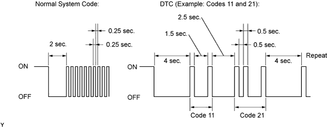
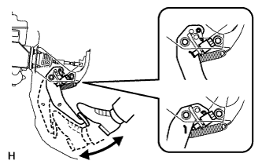

VEHICLE STABILITY CONTROL SYSTEM > DTC CHECK / CLEAR |
| DTC CHECK / CLEAR (SST CHECK WIRE) |
 |
DTC check
Using SST, connect terminals 13 (TC) and 4 (CG) of the DLC3.
Turn the engine switch on (IG).
Read the DTCs from the ABS warning light, VSC OFF indicator light*1, or multi-information display*2 on the combination meter.
| Trouble Area | See Procedure |
| TC and CG terminal circuit |
Click here
|
| ABS warning light circuit |
Click here or Click here
|
| VSC OFF indicator light circuit*1 |
Click here or Click here
|
As examples, the illustration below shows the blinking patterns of the normal system code and DTC 11 and 21.

Refer to the Diagnostic Trouble Code Chart (Click here) for DTC information.
After completing the check, turn the engine switch off and remove SST from the DLC3.
DTC clear
|
Using SST, connect terminals 13 (TC) and 4 (CG) of the DLC3.
Turn the engine switch on (IG).
 |
Clear the DTCs stored in the ECU by depressing the brake pedal 8 times or more within 5 seconds.
Check that "DIAG VSC OK" is displayed on the multi-information display*1 and check that the ABS warning light and VSC OFF indicator light*2 output a normal system code.
Remove SST from the terminals of the DLC3.
| DTC CHECK / CLEAR (INTELLIGENT TESTER) |
DTC check
Connect the intelligent tester to the DLC3.
Turn the engine switch on (IG).
Turn the intelligent tester on.
Enter the following menus: Chassis / ABS/VSC/TRC / DTC.
Read the DTCs by following the directions on the intelligent tester screen.
DTC clear
Connect the intelligent tester to the DLC3.
Turn the engine switch on (IG).
Turn the intelligent tester on.
Enter the following menus: Chassis / ABS/VSC/TRC / DTC.
Clear the DTCs by following the directions on the intelligent tester screen.
| END OF DTC CHECK / CLEAR |
Turn the engine switch on (IG).
Check that the ABS warning light and VSC OFF indicator light* go off within approximately 3 seconds.